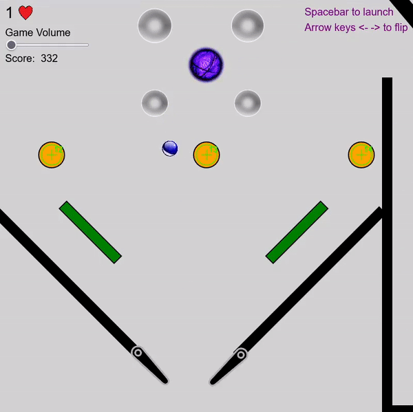
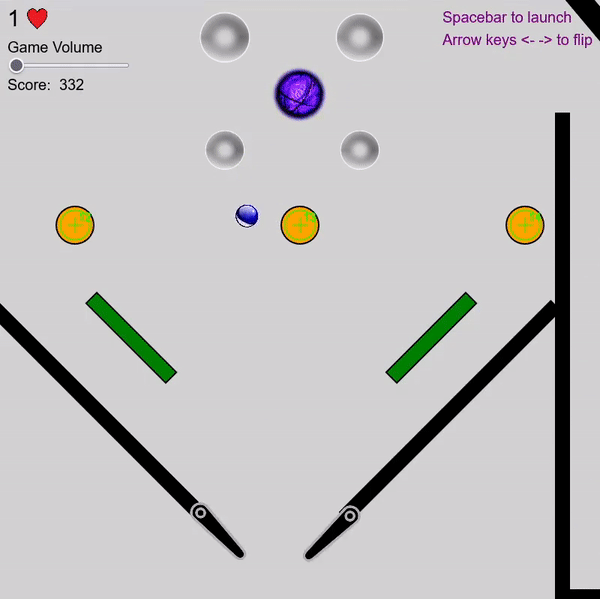
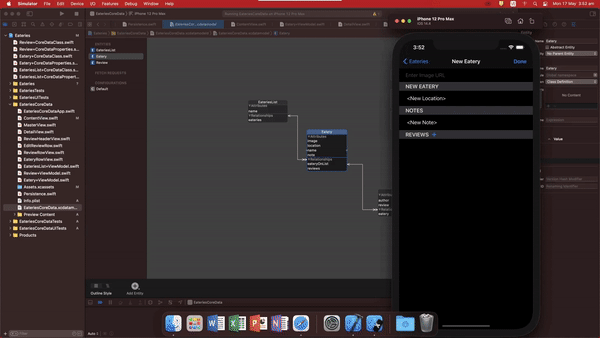
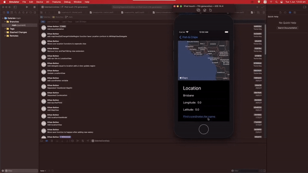
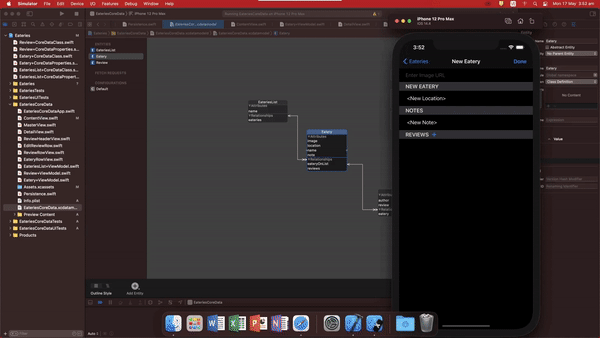
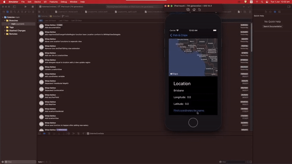
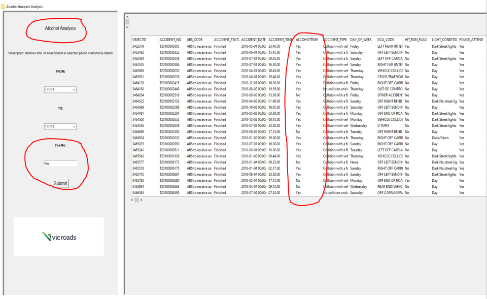

Pinball
A complete pin ball game users can interact with exploring the open source p5.play library to create a canvas with GUI components, sound, sprites/animations, and JSON sorting.

Hi, I'm Ethan. I am an Aspiring web developer and a software engineering student at Griffith University.
A complete pin ball game users can interact with exploring the open source p5.play library to create a canvas with GUI components, sound, sprites/animations, and JSON sorting.
Created an IOS eateries app the logs user’s entries of restaurants keeping keeps of location featuring google maps, pictures, name, and personal notes in a list.
Developed a desktop application featuring a python script using Tkinter that allows for a large set of data to more sorted into different categories.
 

A complete pin ball game users can interact with exploring the open source p5.play library to create a canvas with GUI components, sound, sprites/animations, and JSON sorting.
 



Created an IOS eateries app the logs user’s entries of restaurants keeping keeps of location featuring google maps, pictures, name, and personal notes in a list.
All the required information is made available for the user to analyse, and the scroll bars are implemented to allow the user to see all the information that isn’t originally visible. The results shown in the table are a series of data filtered by the time period selected and only showing information between the dates 01/01/18 and 01/01/19.

The results shown in the table are a series of data filtered by the time period selected and the keyword selected. The table only shows the information between the dates 01/01/18 and 01/01/19, and with an accident type that matches “Struck animal”.
The results shown in the table are a series of data filtered by the time period selected and if the accident involved alcohol determined by the user entering “Yes” or “No”. The table only shows the information between the dates 01/01/18 and 01/01/19, and all accidents within that time period that are related to alcohol.
Developed a desktop application featuring a python script using Tkinter that allows for a large set of data to more sorted into different categories.